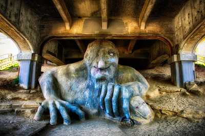

The troll bridge is slightly outside the downton area of Seattle but is still accesible in a short drive from the other features on this tour. Just like in a fantasy story a giant troll that appears to have turned to stone resides under the freemont bridge. The troll is clutching a car which shows its massive size. This is a fun location to for tourists to take a picture and climb around in some free entertainment.
